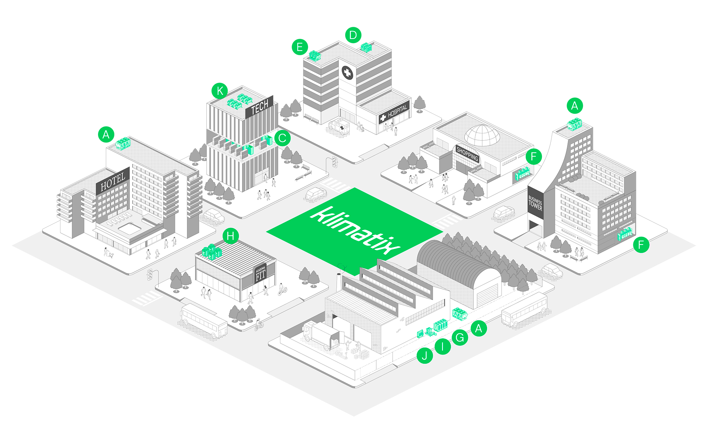
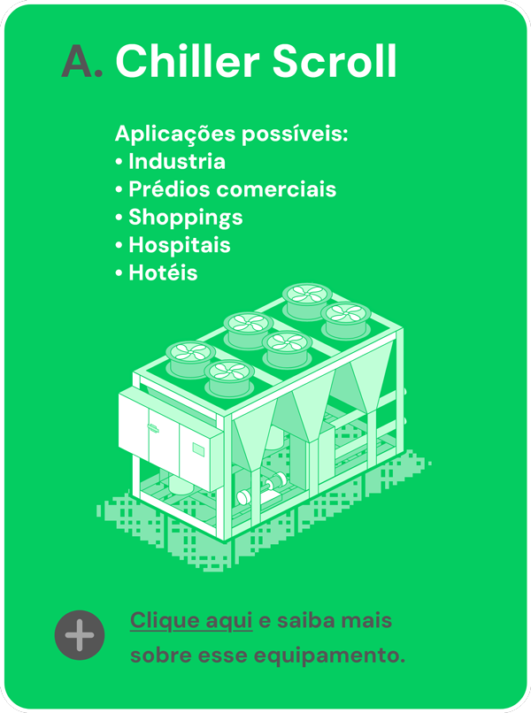

<div class="cidade-zoom_container">
    <div id="cidade-zoom_zoom" class="cidade-zoom_magnify-wrapper">
        
        <div id="cidade-zoom_container_large-img"></div>
    </div>
    <div id="cidade-zoom_overlay"></div>
    <div id="cidade-zoom_modal">
        <div id="cidade-zoom_modal_content">
            <button id="cidade-zoom_model_close_button" onclick="document.querySelector('.cidade-zoom_container').classList.remove('cidade-zoom_modal_open');">X</button>
            <a href="https://klimatix.com/chiller-scroll-rlac-s/" target="_blank">
                
            </a>
        </div>
    </div>
</div>
<style>
   .cidade-zoom_container {
        display: flex;
        justify-content: center;
        align-items: center;
        height: 100vh;
        overflow: scroll;
    }
    .cidade-zoom_magnify-wrapper {
        position: relative;
        max-height: 100vh;
    }
    .cidade-zoom_magnify-wrapper img {
        max-height: inherit;
    }

    .cidade-zoom_magnify-wrapper #cidade-zoom_container_large-img {
        background: url("city2_prepared.png")
        no-repeat #fff;
        width: 300px;
        height: 300px;
        box-shadow: 0 5px 10px -2px rgba(0, 0, 0, 0.3);
        pointer-events: none;
        position: absolute;
        border: 4px solid #efefef;
        z-index: 99;
        border-radius: 100%;
        display: block;
        opacity: 0;
        transition: opacity 0.2s;
    }
    
    .cidade-zoom_magnify-wrapper:hover #cidade-zoom_container_large-img,
    .cidade-zoom_magnify-wrapper:active #cidade-zoom_container_large-img
    {
        opacity: 1;
    }

    #cidade-zoom_overlay,  #cidade-zoom_modal, #cidade-zoom_model_close_button {
        display: none;
    }

    .cidade-zoom_modal_open #cidade-zoom_overlay {
        display: block;
        background-color: rgba(255,255,255,0.8);
        position: fixed;
        width: 100%;
        height: 100%;
        top: 0;
        left: 0;
        z-index: 100;
    }
    .cidade-zoom_modal_open #cidade-zoom_modal{
        display: flex;
        position: fixed;
        height: 100%;
        width: 100%;
        top: 0;
        left: 0;
        z-index: 101;
        align-items: center;
        justify-content: center;
    }

    .cidade-zoom_modal_open  #cidade-zoom_modal_content
    {
        position: relative;
        text-align: center;
    }
    .cidade-zoom_modal_open  #cidade-zoom_model_close_button
    {
        display: block;
        position: absolute;
        left: 50%;
        top: 0;
        margin-left: 100px;
        margin-top: -30px;
        border: none;
        background-color: red;
        color: #fff;
        font-weight: bold;
        font-size: 20px;
        border-radius: 10%;
        cursor: pointer;
    }
</style>
<script>
    var cidadeZoom_letter = null; 
    document.getElementById("cidade-zoom_zoom").addEventListener(
  "mousemove",
  function (e) {
    let original = document.getElementById("cidade-zoom_container_main-img"),
      magnified = document.getElementById("cidade-zoom_container_large-img"),
      style = magnified.style,
      x = e.pageX - this.offsetLeft,
      y = e.pageY - this.offsetTop,
      imgWidth = original.width,
      imgHeight = original.height,
      xperc = (x / imgWidth) * 100,
      yperc = (y / imgHeight) * 100;

    // Add some margin for right edge
    if (x > 0.01 * imgWidth) {
      xperc += 0.15 * xperc;
    }

    // Add some margin for bottom edge
    if (y >= 0.01 * imgHeight) {
      yperc += 0.15 * yperc;
    }

    // Set the background of the magnified image horizontal
    var xpercResult = xperc - 9;
    style.backgroundPositionX = xpercResult + "%";
    // Set the background of the magnified image vertical
    var ypercResult = yperc - 9;
    style.backgroundPositionY = yperc - 9 + "%";

    /// click content 
    document.getElementsByTagName("body")[0].style.cursor = 'default';
    console.log(xpercResult, ypercResult);
    cidadeZoom_letter = null;
    if( 
        xpercResult > 7.5 && xpercResult < 10.5 
        && ypercResult > 22.5 && ypercResult < 27.4
    )
    {
        document.getElementsByTagName("body")[0].style.cursor = 'pointer';
        cidadeZoom_letter = 'A';
        
    }

    // Move the magnifying glass with the mouse movement.
    style.left = x - 150 + "px";
    style.top = y - 150 + "px";

    

  },
  false
);

document.getElementById("cidade-zoom_zoom").addEventListener("click", function(){
    if( cidadeZoom_letter != null )
    {
        cidadeZoom_openLetter(cidadeZoom_letter);
    }
});

function cidadeZoom_openLetter(letter)
{
    document.querySelector('.cidade-zoom_container').classList.add('cidade-zoom_modal_open');
}


</script>